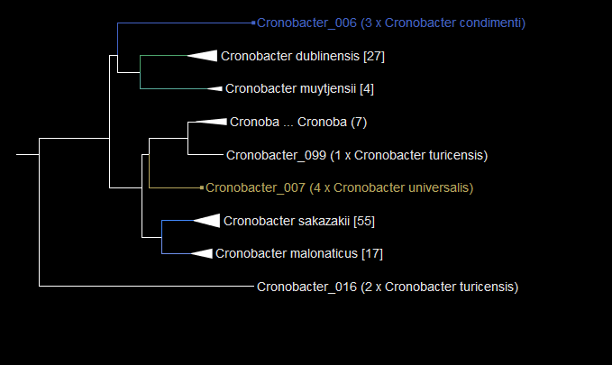
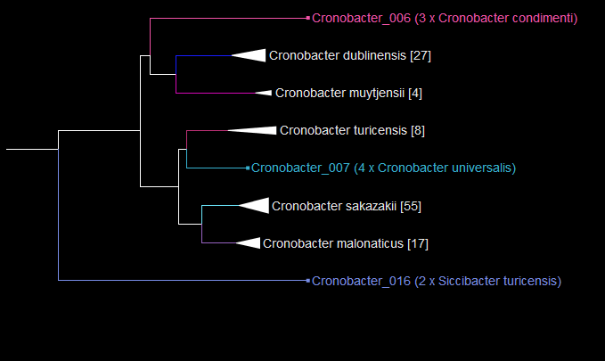
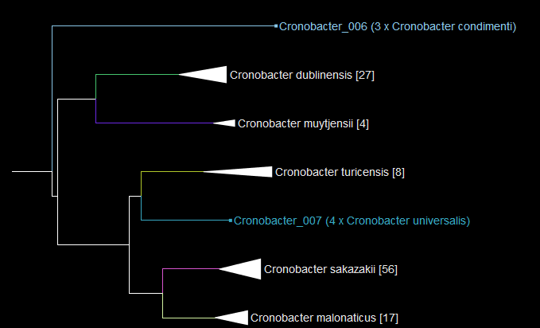

layout: true class: typo, typo-selection --- count: false class: nord-dark, center, middle # POC Clinical Diagnostics Considerations of Customised Sequence Databases --- class: nord-dark, middle # Big Picture Goal > Generate metagenomic sequence data from clinical samples and > analyse this data in real time to diagnose infections at the hospital > on an intergrated end-to-end platform. .center["...bring molecular epidemiology closer to the bedside"] [.oc-gray-6.float-right.font-xs.width-65[Břinda, Karel, et al. "Rapid inference of antibiotic resistance and susceptibility by genomic neighbour typing." Nature Microbiology (2020): 1-10.]](https://www.nature.com/articles/s41564-019-0656-6) --- class: nord-dark, center ## PLATFORM REQUIREMENTS .sat-65.font-md.rect.dark.round-lg.green.border[ .sat-65.rect.round-lg.green.border.width-100[ .rect.width-23[**Sample**] .sat-33.rect.round-lg.teal.border.width-23[**Target Enrichment**] .sat-33.rect.round-lg.teal.border.width-23[**Extraction**] .sat-33.rect.round-lg.teal.border.width-23[**Library Prep**] ] .rect.dark.round-lg.blue.border.width-100[ .sat-65.rect.round-lg.green.border.width-100[ .sat-33.rect.width-23[**Sequencing/ Basecalling**] .sat-33.rect.round-lg.teal.border.width-35[**ONT**] .sat-33.rect.round-lg.teal.border.width-35[**Compute**] ] .sat-65.rect.round-lg.green.border.width-100[ .sat-65.rect.width-23[**Data analysis**] .sat-33.rect.round-lg.teal.border.width-23[**Mapping**] .sat-33.rect.round-lg.teal.border.width-23[**Database**] .sat-33.rect.round-lg.teal.border.width-23[**Compute**] ] .width-100[**Portable Device**] ] .sat-65.rect.round-lg.green.border.width-100[ .rect.width-23[**Reporting**] .sat-33.rect.round-lg.teal.border.width-23[**Relevance**] .sat-33.rect.round-lg.teal.border.width-23[**Interpretation**] .sat-33.rect.round-lg.teal.border.width-23[**Confidence**] ] ] --- class: nord-dark, center ## PLATFORM REQUIREMENTS .sat-65.font-md.rect.dark.round-lg.green.border[ .sat-55.rect.round-lg.green.border.width-100[ .rect.width-23[**Sample**] .rect.round-lg.teal.dark.border.width-23[**Target Enrichment**] .rect.round-lg.teal.dark.border.width-23[**Extraction**] .sat-33.rect.round-lg.teal.border.width-23[**Library Prep**] ] .rect.dark.round-lg.blue.border.width-100[ .sat-65.rect.round-lg.green.border.width-100[ .rect.width-23[**Sequencing/ Basecalling**] .sat-33.rect.round-lg.teal.border.width-35[**ONT**] .sat-33.rect.round-lg.teal.border.width-35[**Compute**] ] .sat-65.rect.round-lg.green.border.width-100[ .rect.width-23[**Data analysis**] .rect.round-lg.teal.dark.border.width-23[**Mapping**] .rect.round-lg.teal.dark.border.width-23[**Database**] .sat-33.rect.round-lg.teal.border.width-23[**Compute**] ] .width-100[**Portable Device**] ] .sat-65.rect.round-lg.green.border.width-100[ .rect.width-23[**Reporting**] .sat-33.rect.round-lg.teal.border.width-23[**Relevance**] .sat-33.rect.round-lg.teal.border.width-23[**Interpretation**] .sat-33.rect.round-lg.teal.border.width-23[**Confidence**] ] ] --- class: nord-dark, center ## PLATFORM REQUIREMENTS .sat-65.font-md.rect.dark.round-lg.green.border[ .sat-55.rect.round-lg.green.border.width-100[ .rect.width-23[**Sample**] .sat-63.rect.round-lg.teal.dark.border.width-23[**Target Enrichment**] .sat-63.rect.round-lg.teal.dark.border.width-23[**Extraction**] .sat-33.rect.round-lg.teal.border.width-23[**Library Prep**] ] .rect.dark.round-lg.blue.border.width-100[ .sat-65.rect.round-lg.green.border.width-100[ .rect.width-23[**Sequencing/ Basecalling**] .sat-33.rect.round-lg.teal.border.width-35[**ONT**] .sat-33.rect.round-lg.teal.border.width-35[**Compute**] ] .sat-65.rect.round-lg.green.border.width-100[ .rect.width-23[**Data analysis**] .sat-63.rect.round-lg.teal.dark.border.width-23[**Mapping**] .rect.round-lg.red.border.width-23[**Database**] .sat-33.rect.round-lg.teal.border.width-23[**Compute**] ] .width-100[**Portable Device**] ] .sat-65.rect.round-lg.green.border.width-100[ .rect.width-23[**Reporting**] .sat-33.rect.round-lg.teal.border.width-23[**Relevance**] .sat-33.rect.round-lg.teal.border.width-23[**Interpretation**] .sat-33.rect.round-lg.teal.border.width-23[**Confidence**] ] ] --- class: nord-dark ## .center[Sequence Databases] A collection of known genomes sequences with taxonomic lables (names) that is preprocessed (indexed) to allow for very fast searching. We can search a database using our newly generated sequences as the query to workout what organisms our sequences comes from. - In a given database search, the time and space complexity is proportioal to database size. - Most standard sequence databases (Kraken2, Centrifuge, etc) are based on .oc-blue-9[**NCBI RefSeq**], which is very large and has other issues. --- class: nord-dark ## .center[NCBI Issues] .center[The NCBI supplied taxonomy is polyphyletic.] Some species are just mislabled... .img[] This *N. meningitidis* is labled as a *Psychobacter*?? --- class: nord-dark ## .center[NCBI Issues] Some species are just mislabled... .abs-layout.top-30.left-23[**Before**] .abs-layout.top-30.left-69[**After**] .abs-layout.top-40.width-35[] .abs-layout.top-40.left-55.width-35[] --- class: nord-dark ## .center[NCBI Issues] Sometimes a new species has been defined, but lables have not caught up... .abs-layout.top-30.left-23[**Before**] .abs-layout.top-30.left-69[**After**] .abs-layout.top-40.width-35[] .abs-layout.top-40.left-55.width-35[] --- class: nord-dark ## .center[NCBI Issues] Some taxonomic groups are under studied, and species haven't been named yet... .abs-layout.top-30.left-23[**Before**] .abs-layout.top-30.left-69[**After**] .abs-layout.top-40.width-35[] .abs-layout.top-40.left-55.width-35[] --- class: nord-dark ## .center[NCBI Issuse] Disclaimer: The NCBI taxonomy database is **not an authoritative source for nomenclature** or classification - please consult the relevant scientific literature for the most reliable information. --- class:nord-dark, center, middle # A mislabled genome in a database of a diagnostic tool would be very irresponsible! --- class:nord-dark, center ## Fixing a mislabeled genome #####Get sone data Download all the genome assemblies for a Genera of interest from NCBI .font-sm[(refSeq - **complete** genomes for all *Cronobacter*)] --- class:nord-dark, center ## Fixing a mislabeled genome Cluster the assemblies and select a representitive 509 -> 120 --- class: nord-dark, center ## Fixing a mislabeled genome  Identified a misclassified *Cronobacter* by building a tree --- class: nord-dark, center ## Fixing a mislabeled genome  Fixed the offending taxon name, now tree is monophyletic. A diagnosis based on a database of these genomes would be accurate. --- class: nord-dark, center ## Fixing a mislabeled genome  Remove the offending Genus from the Cronobacter tree. --- exclude:true <iframe width="100%" height="100%" src="html/taxonomy.krona.html" allowfullscreen frameborder=”no” border=”0″ marginwidth=”0″ marginheight=”0″ scrolling=”yes” allowtransparency=”yes”></iframe> --- class: nord-dark ## .center[Collect Genomes of Interest] --- class: nord-dark ## .center[Neighbour ARM typing] --- class: nord-dark ## .center[Recomended Reading] [.oc-blue-9.typo-u[**Correcting index databases improves metagenomic studies**]](https://www.biorxiv.org/content/10.1101/712166v1.full.pdf) [.oc-blue-9.typo-u[**A review of methods and databases for metagenomic classification and assembly**]](https://www.ncbi.nlm.nih.gov/pmc/articles/PMC6781581/pdf/bbx120.pdf) [.oc-blue-9.typo-u[**Defining pathogenic bacterial species in the genomic era**]](https://www.ncbi.nlm.nih.gov/pmc/articles/PMC3109419/) [.oc-blue-9.typo-u[**Genomics and the bacterial species problem**]](https://www.ncbi.nlm.nih.gov/pmc/articles/PMC1794555/) [.oc-blue-9.typo-u[**Prokaryotic evolution and the tree of life are two different things**]](https://biologydirect.biomedcentral.com/articles/10.1186/1745-6150-4-34) --- ## Hosted ---